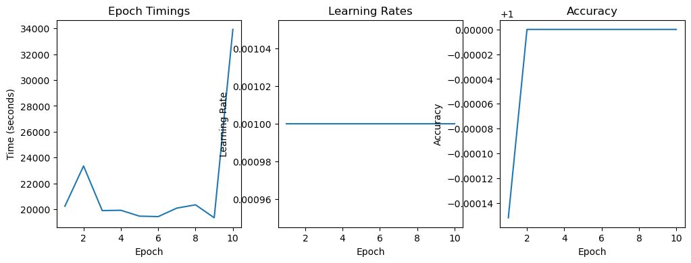
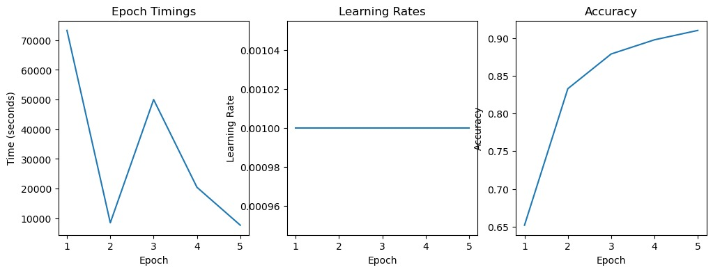

Junior Research Fellow
Duration: November 2022 - August 2023
Description
As a Junior Research Fellow at Special AIML Research Lab, I have worked on Deep Learning Architectural Adaptation Studies that entailed novel effort estimation techniques. Generally, Effort Estimation is considered for Software Applications but it is not generally not preferred for Deep Learning Applications since they are computationally complex. These approximation techniques are helpful at optimizing the way deep learning costs are computed.

In another part of my fellowship, I elucidated Apriori Analysis of Deep Learning Models. Apriori is a theoretical framework where observations are highly emphasized over practical results. The work was published in ISDA 2023. The results can be used as a new numerical technique by DL designers who can use it to save their development timings by 2.5hrs.

I also assessed scalabilities across deep learning AGI models based on their architectural parameters which can be used by designers while deciding the deployment points for their developed architectures. Additionally, it can also be used to leverage architectures for use in broad range of applications.

The practical aspect of my fellowship is where I have used novel elliptical optical converters to measure traffic at Patny Junction using YOLO NAS based Vehicle Count Algorithms.